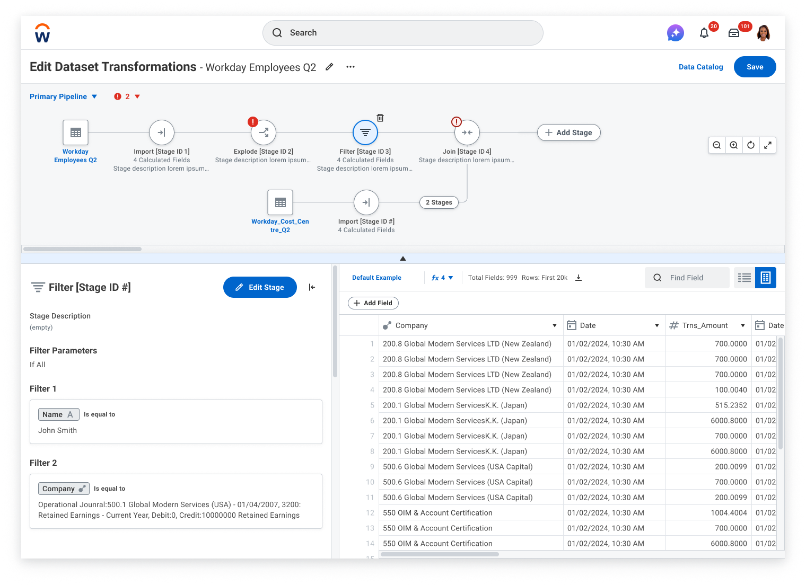
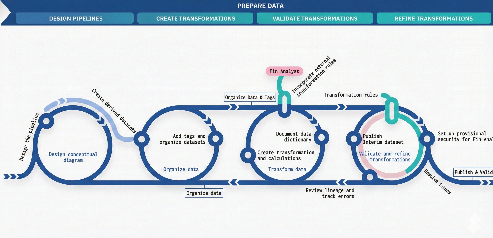
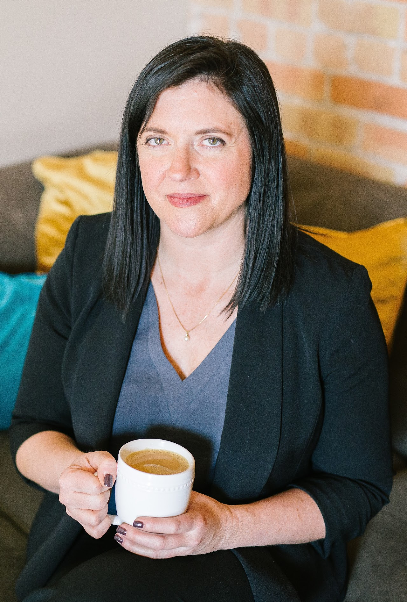

Transform Canvas: Visual Pipeline Editor
Reimagining data preparation through visual context and intuitive navigation
Product Design Leadership

Background
Data Preparation Journey

The existing data preparation editor presented users with a fragmented, step-based interface that obscured the relationships between transformation stages. Users struggled to understand their pipeline's structure, locate errors, and navigate efficiently through complex data workflows.
Existing Data Preparation Editor
Goals
Transform the data preparation experience by providing a visual, intuitive interface that empowers users to understand, navigate, and manage complex data pipelines with confidence.
Visual Pipeline Representation
Provide a holistic view of the entire data pipeline, making relationships and data flow immediately visible
Reduced Debugging Time
Surface errors and issues directly on the canvas, eliminating the need to hunt through individual stages
Intuitive Navigation
Enable users to quickly jump between stages and maintain context while editing
Self-Service for All Users
Empower IT analysts to build and maintain pipelines independently without engineering support
Improved Onboarding
Reduce the learning curve for new users through visual representation of data concepts
My Role
Design Leadership & Research Partnership
- Led end-to-end UX design for the Transform Canvas visual editor
- Partnered with UX Research team to conduct two-phase user research study
- Facilitated concept validation sessions with 12+ users across discovery and validation phases
- Collaborated with engineering to define technical constraints and feasibility
- Created comprehensive design specifications and interactive prototypes
- Worked with product management to prioritize features for 23R2 release scope
Target Users
Based on our research, we identified three distinct user personas with different needs, technical backgrounds, and workflow patterns. Nina, the IT Analyst, represents our primary target user.

Process
Our design process combined rigorous user research with iterative concept development, allowing us to deeply understand user needs before crafting solutions.
Key Research Insights
Our research revealed four critical insights that shaped the design direction:
Expertise Impacts Approach
Prism experts and Data Engineering experts approach pipeline creation differently. Prism experts think in terms of the UI flow, while DE experts think in terms of data transformations and SQL operations.
"I think about what data I need at the end and work backwards, but the tool makes me build forwards step by step." — Senior Data Engineer
Visual Representations are Essential
Users consistently drew diagrams on whiteboards or in documentation to understand their pipelines before returning to the tool. The mental model was inherently visual, but the tool was not.
"I always sketch out my pipeline on paper first. I can't keep all the connections in my head when I'm just looking at a list." — IT Analyst
Small UI Issues Compound
Individual friction points like extra clicks, hidden menus, and lack of keyboard shortcuts accumulated into significant productivity losses over time, especially for power users building complex pipelines.
"It's not one big thing that's broken—it's death by a thousand paper cuts. Each task takes just a few extra clicks, but it adds up." — Prism Analyst
Context Must Stay Visible
When editing a specific stage, users lost visibility of the overall pipeline context. This forced constant mental effort to remember where they were and how changes might impact downstream stages.
"I changed a field name and broke three things downstream. I didn't even know those stages existed until the errors appeared." — Implementation Consultant
The Solution: Transform Canvas
Transform Canvas provides a visual, interactive representation of the entire data pipeline, allowing users to see all stages, their connections, and status at a glance while maintaining the ability to drill into any stage for detailed editing.
Key Features
Holistic Pipeline View
See the entire pipeline structure at once with zoomable, pannable canvas that shows all stages and their relationships.
Inline Stage Editing
Edit stage configurations directly on the canvas without losing context of the overall pipeline structure.
Surfaced Errors
Errors are visually highlighted on the canvas with clear indicators, making troubleshooting immediate and intuitive.
Expand/Collapse Branches
Manage complexity by collapsing branches you're not working on, focusing attention on relevant stages.
Keyboard Navigation
Full keyboard support for power users to navigate, select, and edit stages without touching the mouse.
Real-Time Updates
Changes to one stage immediately reflect across the canvas, showing downstream impacts instantly.
Release Scope
The Transform Canvas was delivered as part of the 23R2 release cycle. We prioritized features that addressed the most critical user pain points while planning future enhancements for subsequent releases.
| Feature | Description | Status |
|---|---|---|
| Visual Pipeline Canvas | Interactive diagram showing all stages and connections | ✓ 23R2 |
| Stage Status Indicators | Visual error and warning indicators on each stage | ✓ 23R2 |
| Click-to-Edit Stages | Open stage editor panel by clicking any stage | ✓ 23R2 |
| Zoom and Pan Controls | Navigate large pipelines with mouse and keyboard | ✓ 23R2 |
| Stage Grouping | Group related stages into collapsible containers | ✓ 23R2 |
| Keyboard Shortcuts | Navigate and edit using keyboard only | ✓ 23R2 |
| Mini-Map Navigation | Overview map for quick navigation in large pipelines | ◇ Future |
| Collaborative Editing | Real-time multi-user editing capabilities | ◇ Future |
| Version History | Visual diff and restore for pipeline versions | ◇ Future |
| AI-Suggested Stages | Intelligent recommendations for next transformation steps | ◇ Future |
Before & After
The Transform Canvas fundamentally changed how users interact with data pipelines, replacing a fragmented step-based interface with a unified visual experience.
- Linear, sequential navigation through stages
- No visibility of pipeline relationships
- Errors hidden within individual stages
- Users had to mentally track dependencies
- Required multiple clicks to navigate between stages
- No way to see downstream impact of changes
- Visual, holistic view of entire pipeline
- Clear representation of all connections
- Errors surfaced directly on canvas
- Dependencies visible at a glance
- One-click navigation to any stage
- Real-time updates show change impacts
Results & Impact
The Transform Canvas delivered measurable improvements across key metrics, validated through post-launch research and production monitoring.
"The new canvas view completely changed how I work. I can finally see my whole pipeline and understand what's happening at each step. Debugging used to take hours—now it takes minutes."
— Customer feedback, IT Analyst at Fortune 500 company
Reflections
This project reinforced several key principles that I carry into all my design work, while also teaching me new lessons about designing complex data tools.
Research Methodology Matters
Splitting research into discovery and validation phases allowed us to deeply understand problems before jumping to solutions. The foundational interviews revealed insights we wouldn't have uncovered with concept testing alone.
Persona-Driven Design
Having Nina as our primary persona kept the team aligned on who we were designing for. When debates arose about features, we asked "What would Nina need?" and it clarified our direction.
Visual Context is Power
Users' natural instinct to draw diagrams told us everything we needed to know. When users are creating their own visualizations to understand your tool, the tool should provide that visualization.
Phased Delivery Builds Trust
Delivering a focused 23R2 scope with clear future enhancements built stakeholder trust. Users appreciated knowing what was coming next, and engineering could plan capacity more effectively.
Project Credits
Design Leadership
Shanthi Acharya, Lead Product Designer
Research Partner
UX Research Team, Workday
Organization
Workday, Inc. • Prism Analytics Platform
This case study demonstrates how visual thinking and rigorous user research can transform complex enterprise tools into intuitive experiences that users genuinely enjoy.